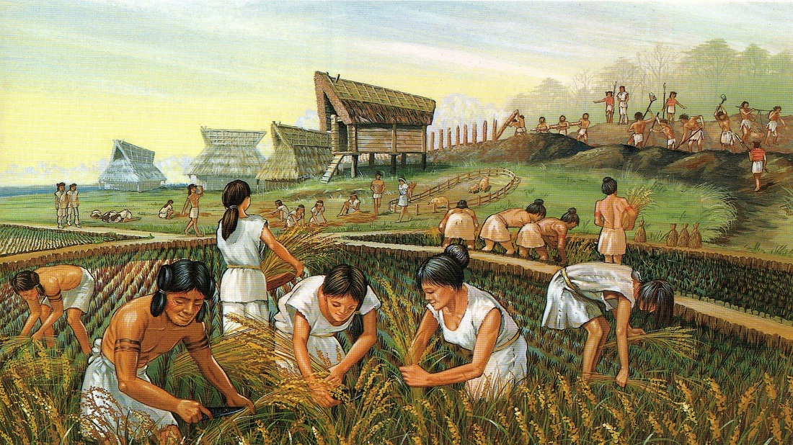
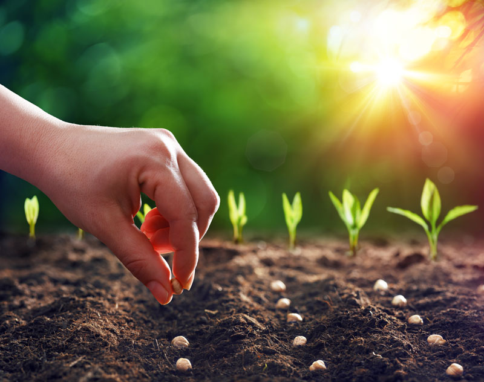

FARMING!
Here you will learn all about farming!
Farming has been around for a LONG time!
It started thousands of years ago! 12,000 years to be precise.

Farmers first discovered farming when they found that all they needed was soil, water and seeds to grow vegetation for food, instead of hunting.

There are 5 types of plants that farmers can grow:
Herbs | Shrubs | Trees | Creepers | Climbers
Put a plant in front of your camera to identify which type of plant it is!